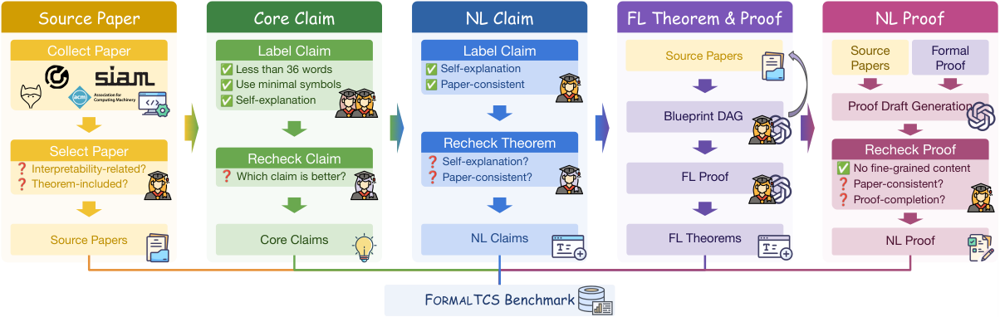
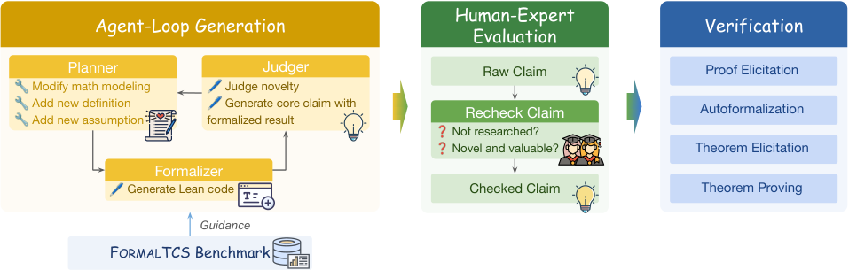

Introduces a benchmark of 175 TCS research instances with expert-verified Lean formalizations and proofs, evaluating LLMs on autoformalization and theorem proving.
Abstract
Large language models (LLMs) have shown growing potential for automated theoretical computer science (TCS) research, yet existing benchmarks remain far from realistic research settings. We introduce \ourbenchmark, an expert-validated benchmark for evaluating LLMs on frontier, end-to-end TCS research. \ourbenchmark contains $175$ instances drawn from papers accepted to STOC, FOCS, SODA, and COLT in 2025-2026, preserving paper-specific definitions, assumptions, and proof dependencies, with expert-verified Lean formalizations and proofs. Evaluations of leading LLMs reveal that current models remain far from reliably completing the full research pipeline. In particular, autoformalization is the sharpest bottleneck: the best model achieves only $11.5$ on translating natural-language claims into formal theorem statements, compared with $28.6$ Pass@8 when proving human-provided formal statements. Building on \ourbenchmark, we further develop an automated TCS research framework that generates, formalizes, filters, and proves new claims. Of $64$ generated claims, only $6$ ultimately pass expert evaluation and proof verification, indicating that beyond formalization, limited research taste remains another major barrier to autonomous TCS research.
Problem
Existing benchmarks for LLMs on theoretical computer science evaluate isolated capabilities, use outdated textbook or Mathlib content, and oversimplify problems, failing to reflect realistic end-to-end TCS research settings.
Approach
FormalTCS collects 175 instances from STOC, FOCS, SODA, and COLT papers (2025-2026), each with expert-verified Lean 4 formalizations and proofs preserving paper-specific definitions and dependencies. Five expert annotators, assisted by LLMs, produced natural-language and formal (Lean/Mathlib) statements and proofs across four tasks: theorem elicitation, autoformalization, proof elicitation, and theorem proving. The authors also build a multi-agent (planner, formalizer, judger) framework to generate, formalize, filter, and prove new TCS claims.

Figure 2: The annotation pipeline of FormalTCS .

Figure 3: Our end-to-end TCS research pipeline using LLMs based on FormalTCS .
Results
Autoformalization is the sharpest bottleneck: the best model scores 11.5 on translating claims into formal statements versus 28.6 Pass@8 when proving human-provided formal statements. Of 64 generated claims, only 6 passed expert evaluation and proof verification, indicating limited research taste.
Model
CC2NC
NC2FT
C2NP
FT2FP
GPT-5.6 (sol)
67.4
10.6
67.9
26.9
Claude Opus-5
66.9
11.5
68.7
28.6
Claude Sonnet-5
63.0
8.8
65.7
24.0
DeepSeek-V4 Pro
58.8
8.3
63.8
21.1
Model performance across the four tasks (CC2NC, NC2FT, C2NP, FT2FP).